Use the Lumana mobile app
The Lumana mobile app lets you access your organization's cameras from your phone. You can monitor live feeds, review recorded footage, manage alerts, and view video walls from anywhere.
Before you begin
You'll need to be an active member of your organization before using the app. You should have received an email invitation and logged in through the Lumana web portal. If you haven't, contact your organization's administrator.
Install the app
Use one of these links to download the app from the appropriate store:
Alternatively, scan this QR code:

After installation, open the app and log in using your credentials.
Navigation
The app has four sections in the bottom navigation bar. Each one leads to a different part of the platform.
- Devices: Browse all cameras connected to your organization, grouped by location.
- Search: Search for people or objects across your cameras using filters.
- Alerts: View real-time notifications triggered across your organization.
- Walls: Open and monitor multi-camera video walls.
Tap the menu icon (≡) in the top left to open the sidebar. The sidebar gives you access to everything in the app from one place.
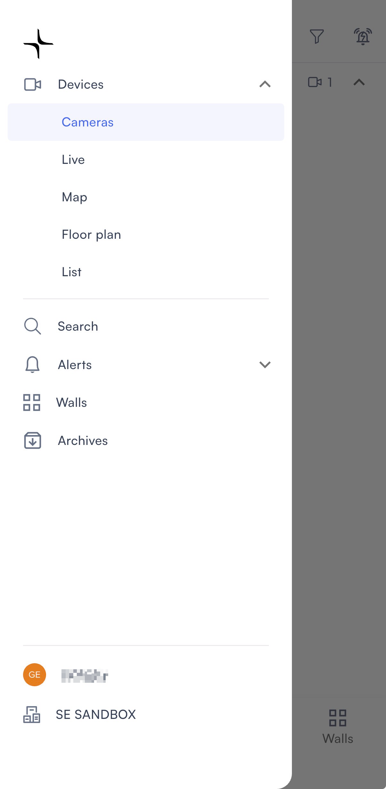
The sidebar links to the following sections, each of which is explained below:
- Devices: Expands to show Cameras, Live, Map, Floor plan, and List.
- Search: Opens the search screen.
- Alerts: Expands to show Monitoring and Configuration.
- Walls: Opens your organization's video walls.
- Archives: Shows all saved archive clips.
View live camera feeds
Tap Devices in the bottom navigation bar or the sidebar to view your camera live feeds. Each view shows the same cameras in a different format.
Cameras
The Cameras view shows your cameras as thumbnails grouped by location. This is the default view when you open the Devices tab.
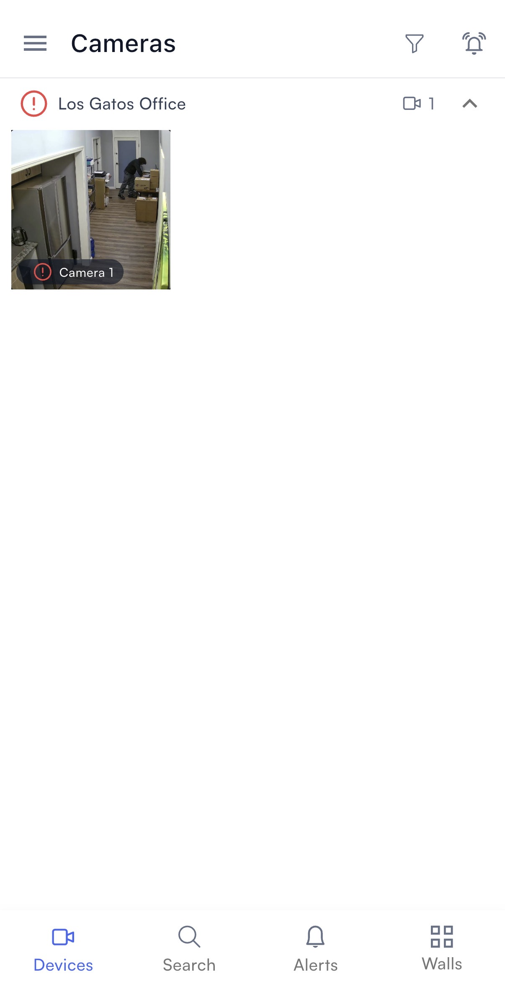
Map
The Map view shows your camera locations on a satellite map powered by Google Maps.
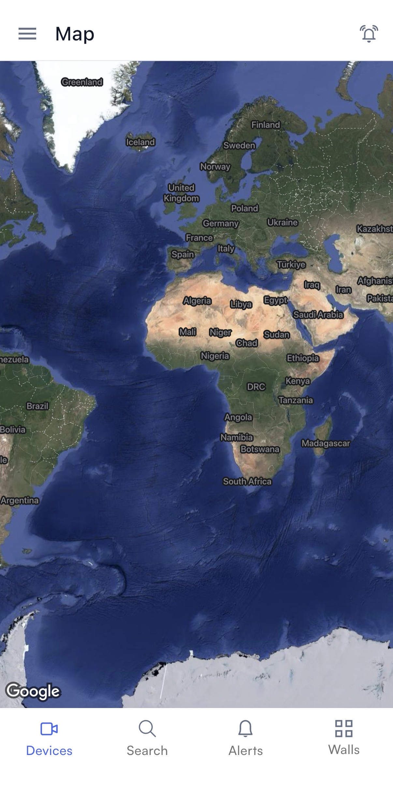
Floor plan
The Floor plan view shows your cameras placed on building floor plans, organized by building and floor.
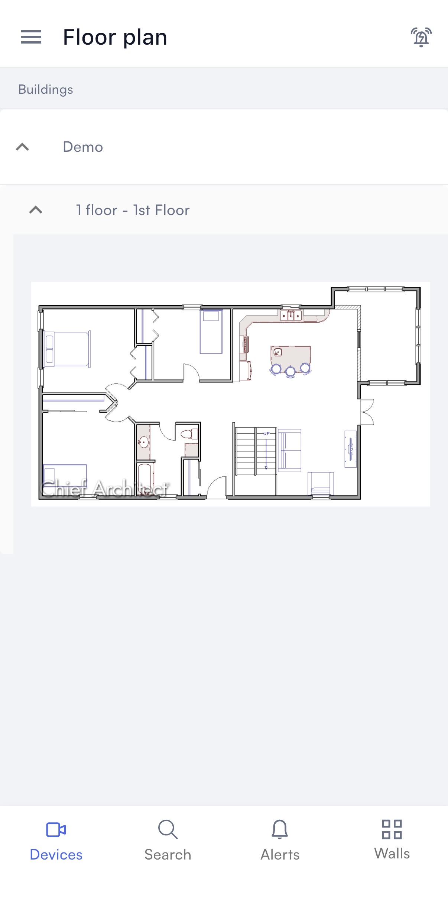
List
The List view shows your cameras in a structured list grouped by Cores and Cameras.
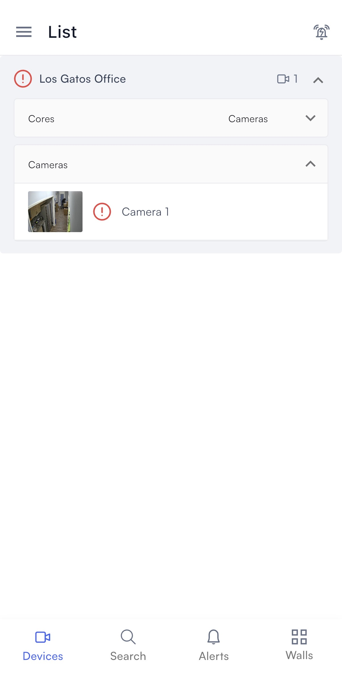
Tap any camera in any of these views to open it. Each camera has four tabs at the top of the screen:
- Live: Watch the camera's live feed and access recording controls.
- Playback: Review recorded footage using a vertical timeline.
- Alerts: See alerts triggered by this camera.
- Search: Search for people or objects in this camera's footage.
The Live tab has the following controls:
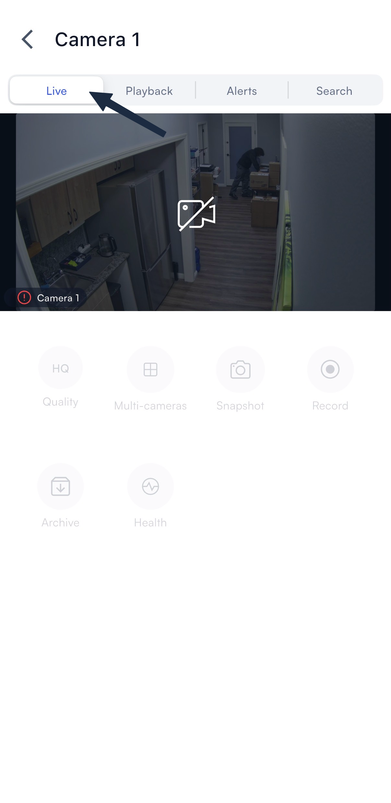
- Quality: Switch between video quality settings.
- Multi-cameras: View multiple cameras at once.
- Snapshot: Take a still image of the current feed.
- Record: Start a local recording.
- Archive: Download footage to your device.
- Health: Check the camera's connection status.
You can switch to recorded footage without leaving the camera view.
Review playback footage
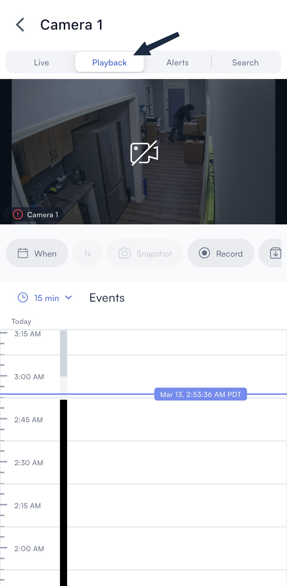
- Tap on a camera's live feed and select the Playback tab.
- Scroll the timeline to the time and date you want to review.
- Tap When to open the date and time picker. Scroll the wheels to select a date, hour, minute, and AM/PM, then tap Save to jump to that point.
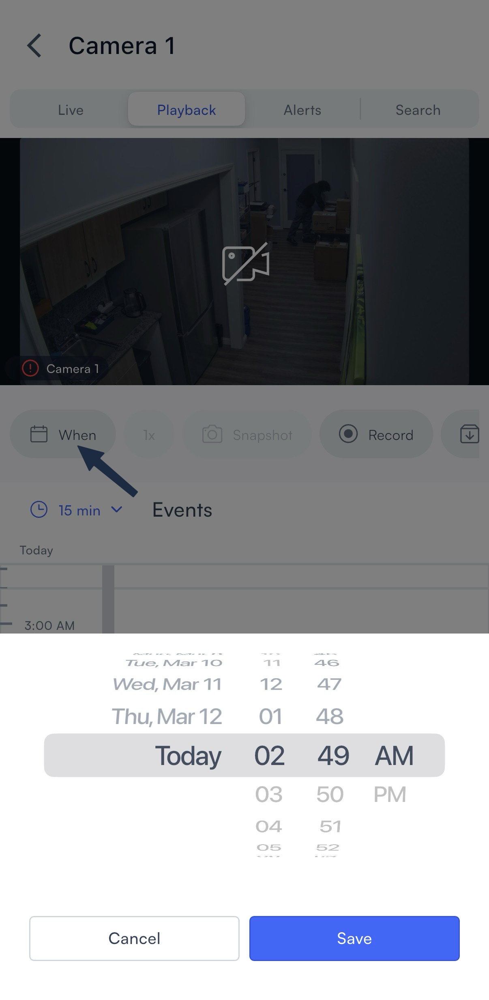
- Use the 1x control to adjust playback speed.
- Scroll down to the Events section to see activity detected in that period.
The Playback tab also has the following controls:
- Record: Start a local recording of the current footage. A timer appears at the top of the feed while recording is active. Tap the red stop button to end the recording.
- Archive: Save a specific clip to your archives. Enter a name, set the From and To times, and tap Create.
- Multi-cameras: View up to four cameras simultaneously on the same screen.
- Album: Browse all archived clips for the camera, filtered by time.
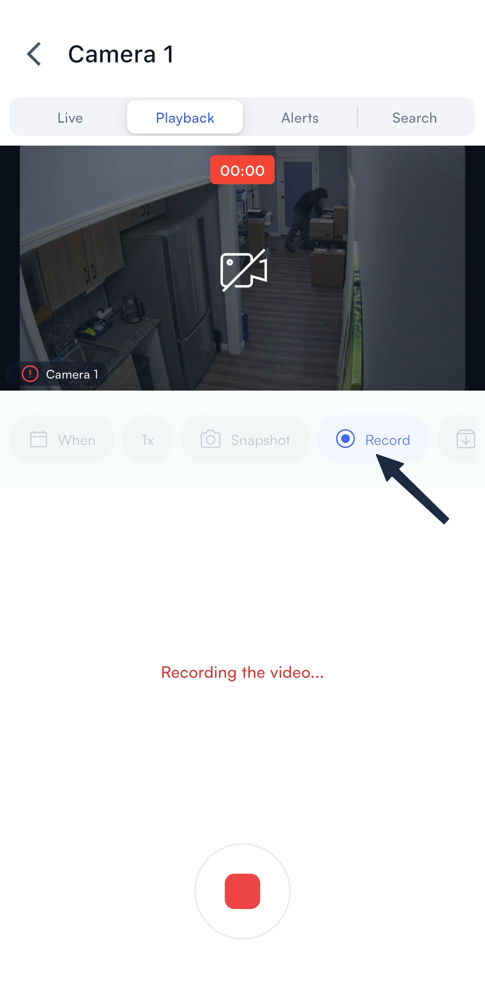
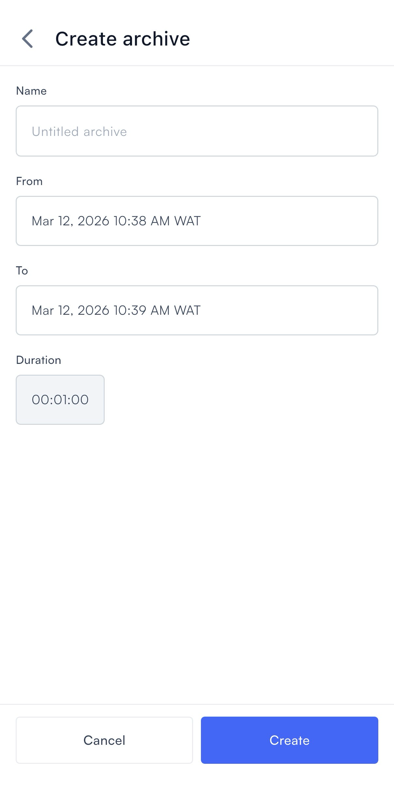
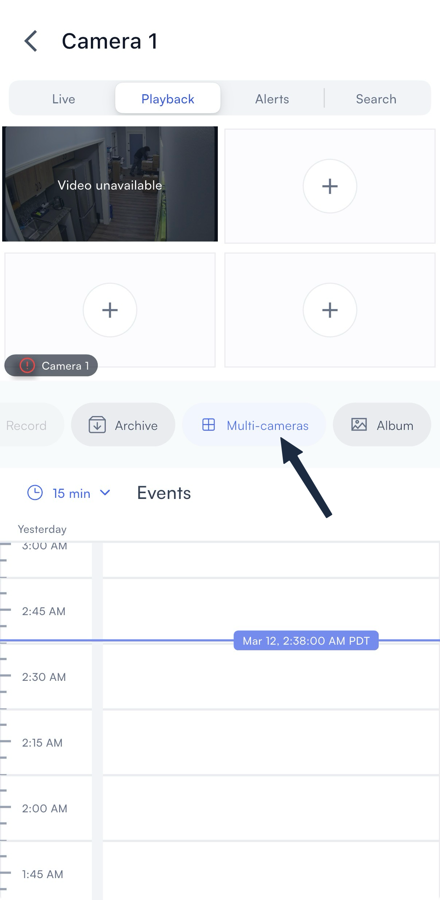
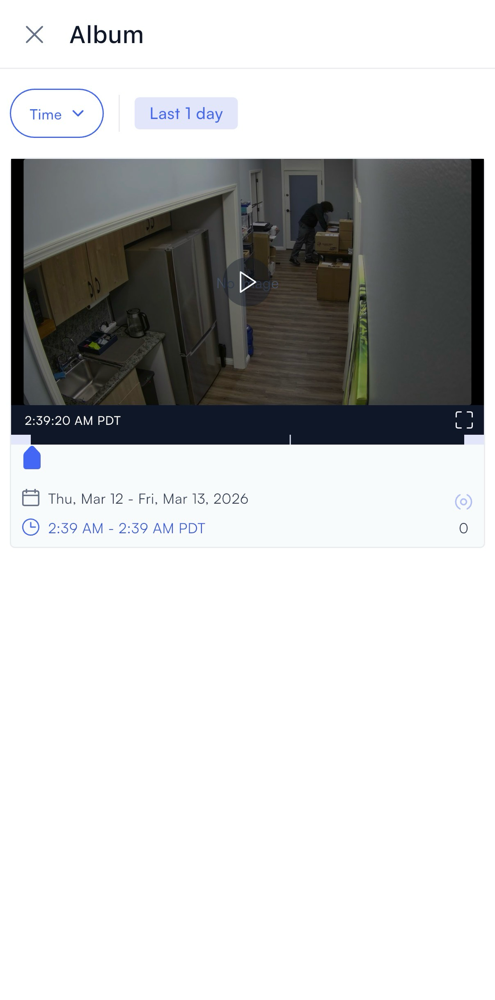
Monitor alerts
You can review alerts for a single camera or across your entire organization. Both views let you filter results and switch between clips and detected objects.
From a single camera
The Alerts tab inside a camera shows only the alerts triggered by that camera.
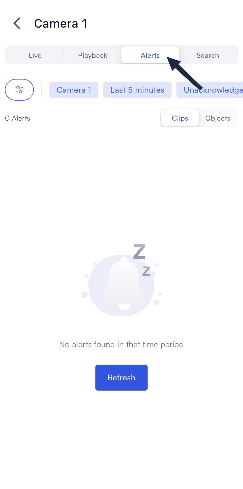
- Open a camera and select the Alerts tab.
- Use the filter chips to narrow results by camera, time range, or acknowledgement status.
- Tap Clips or Objects to switch views.
- Tap an alert to review the video clip and detected objects.
From all cameras
The Alerts section in the bottom navigation bar shows alerts across your entire organization.
- Select Alerts in the bottom navigation bar.
- Use the filters to narrow results across your organization.
Search for people or objects
You can search within a single camera or across your entire organization. Use filters to narrow results by object type, time range, and camera.
From a single camera
Each camera's Search tab lets you search footage from that camera only.
- Open a camera and select the Search tab.
- Tap the filter icon to set your search criteria: camera, time range, and object type.
- Tap Clips or Objects to switch between views.
- Tap a result to open the clip or object detail.
From all cameras
The Search section in the bottom navigation bar lets you search footage across all cameras at once.
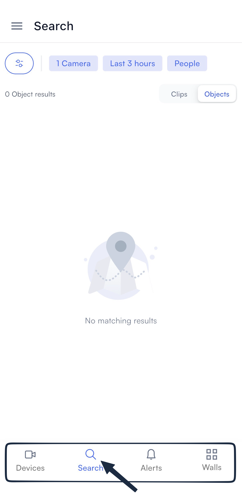
- Select Search in the bottom navigation bar.
- Tap the filter icon to set your search criteria.
- Tap Clips or Objects to switch between views.
View video walls
The Walls tab shows all video walls available in your organization. Tap any wall to open it.
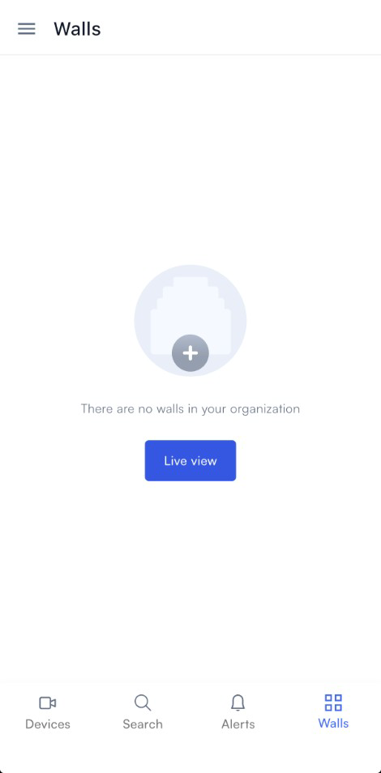
- Select the Walls tab.
- Tap a wall to open it.
Note: Grayed-out walls are not compatible with the mobile app.
Archives
The Archives section in the sidebar shows all clips you've saved across your organization. Use it to quickly access any footage you've archived from a camera's Playback tab.
- Tap the menu icon (≡) in the top left to open the sidebar.
- Select Archives.
- Browse your saved clips, which are listed by camera and time.
- Tap a clip to play it.
Set up mobile notifications
To receive alert notifications on your phone, you need to enable them in two places: inside the Lumana app and in your device settings.
In the Lumana app
The bell icon in the top right controls your in-app notification settings. Tap it to open the notification panel.
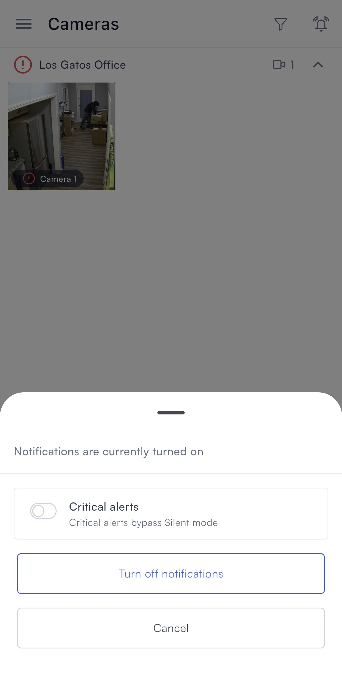
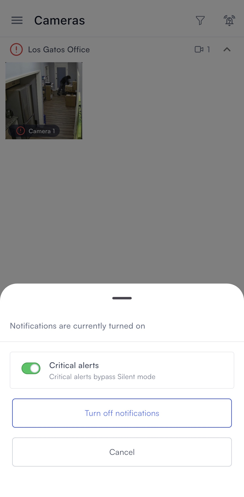
From the notification panel you can:
- Toggle Critical alerts on to allow critical notifications to bypass Silent mode on your device.
- Tap Turn off notifications to stop receiving notifications from the app.
- Tap Cancel to dismiss without making changes.
On iOS
If notifications aren't already enabled for Lumana, then turn them on in your iPhone or iPad settings.
- Open Settings on your iPhone or iPad.
- Select Apps.
- Find and select Lumana.
- Select Notifications.
- Toggle Allow Notifications on.
On Android
If notifications aren't already enabled for Lumana, then turn them on in your Android app settings.
- Open Settings on your Android device.
- Select Apps and notifications, then select Lumana.
- Select Notifications.
- Toggle notifications on.
With notifications enabled, Lumana can alert you to events in real time regardless of which device you're on. The app gives you full access to your cameras, footage, alerts, and video walls from anywhere.